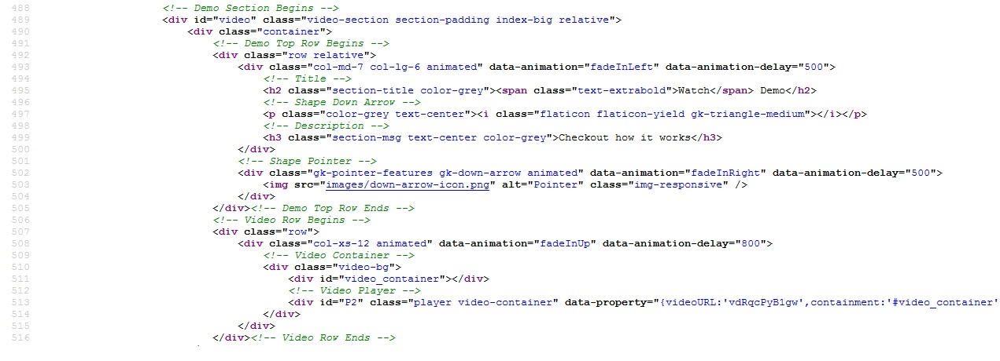

Thank you for purchasing GeekApp Creative App Landing page. If you have any questions that are beyond the scope of this help file, please feel free to email, via my user page contact form. Thanks so much!
The html template uses Bootstrap 3 with valid HTMl5 tags. This theme is a responisve layout with one column. All of the information in content area is nested within a class and comes with predefined classes.

If you would like to edit the color, font, or style of any elements in one of these columns, you would do the following:
.footer-bg {
color: #someColor;
}
If you find that your new style is not overriding, it is most likely because of a specificity problem. Scroll down in your CSS file and make sure that there isn't a similar style that has more weight.
I.E.
.footer-social-icon a{
color: #someColor;
}
So, to ensure that your new styles are applied, make sure that they carry enough "weight" and that there isn't a style lower in the CSS file that is being applied after yours.
I'm using three main CSS files in this theme. The first one is a generic reset file. Many browser interpret the default behavior of html elements differently. By using a general reset CSS file, we can work round this. This file also contains some general styling, such as anchor tag colors, font-sizes, etc. Keep in mind, that these values might be overridden somewhere else in the file.
The second file contains all of the specific stylings for the page. The file is separated into sections using:
/* HEADER Section */ some code /* BANNER Section */ some code /* SHAPE Section */ some code /* FEATURES Section */ some code etc, etc.
If you would like to edit a specific section of the site, simply find the appropriate label in the CSS file, and then scroll down until you find the appropriate style that needs to be edited.
The Footer Section background color is defined as #1a2531. If you would like to change the background color, find the following section in the style sheet:
.footer-bg {
{
change styles here:
}
This theme imports three Javascript files.
[some Javascript goes here...along with an general explanation] [some Javascript goes here...along with an general explanation] [some Javascript goes here...along with an general explanation]
[some Javascript goes here...along with an general explanation]
Once again, thank you so much for purchasing this theme. As I said at the beginning, I'd be glad to help you if you have any questions relating to this theme. No guarantees, but I'll do my best to assist. If you have any queries, please feel free to email, via my user page contact form.